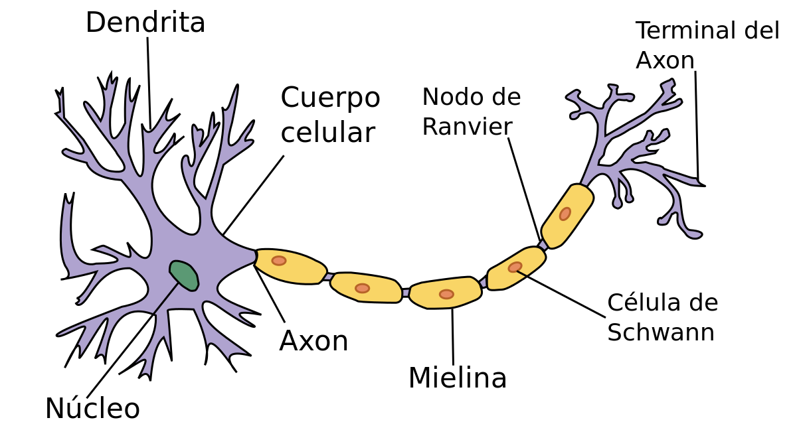
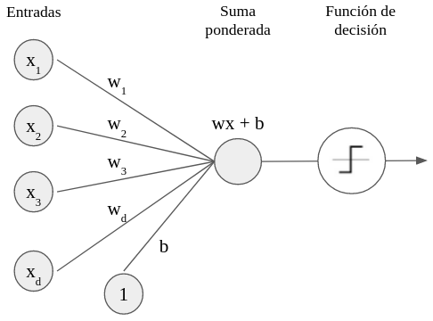
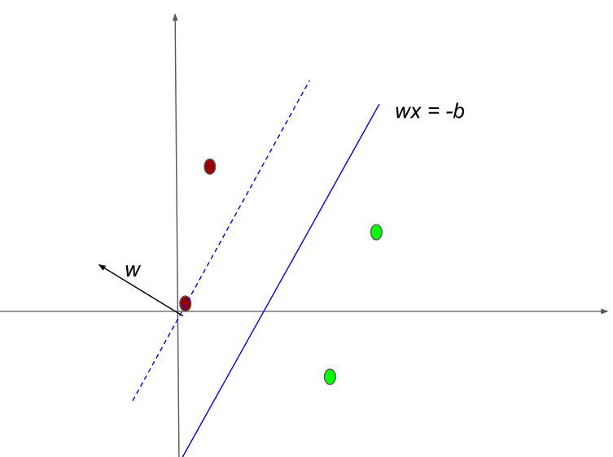
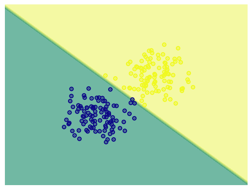
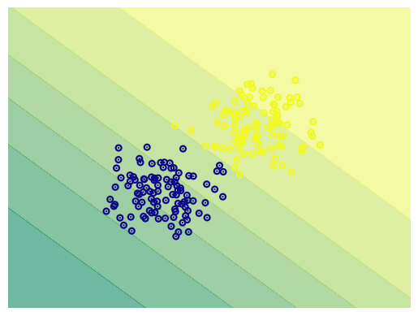
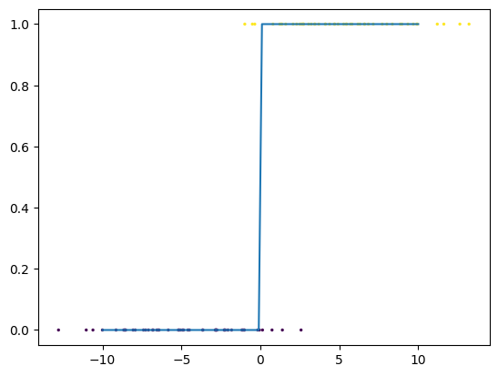
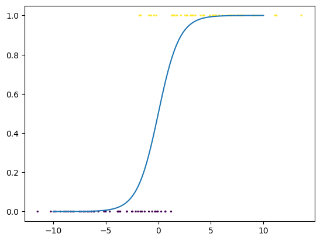
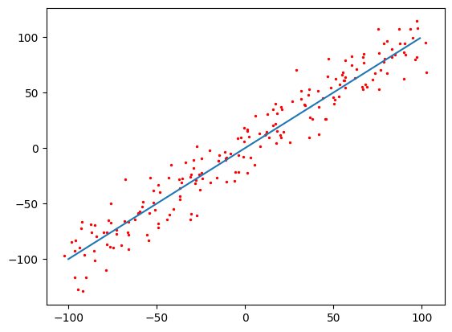

Una de las primeras propuestas sobre un modelo matemático del funcionamiento neuronal fue el de . Estos autores proponían un modelo de calculo lógico (capaz de procesar compuertas lógicas) inspirado por el trabajo de las neuronas biológicas. Sin embargo, una de las desventajas que presentaba este trabajo es que no se planteaba la forma de obtener los valores indicados (pesos) para resolver problemas específicos. Es decir, no se conocía un método de aprendizaje sobre estas neuronas. No fue hasta finales de los años 50s en que se propuso un modelo de aprendizaje basado en el funcionamiento de las neuronas. Este modelo matemático de una neurona fue llamado perceptrón y presentado por .
El perceptrón es un modelo lineal inspirado por el funcionamiento de una neurona. En la Figura 1.1 se muestra un neurona biológica que, como puede observarse, se compone de los siguientes elementos.
Dendritas. Ramificaciones de la neurona que se dedican a la recepción de estímulos, así como a la alimentación celular.
Cuerpo celular o soma. Contiene el núcleo celular, además de otros organelos.
Núcleo. Cuenta con el material genético (ADN y ARN), y se puede decir que es aquí donde se coordinan las funciones de la neurona.
Axón. Es una prolongación de la neurona que se enfoca en conducir los impulsos nerviosos de una a otra neurona. El axón se recubre de células de Schwann, con producción de mielina, la cual protege el axón y permite la transmisión del impulso nervioso. En el axón se presentan los nódulos de Ranvier, que son las interrupciones que se dan en el axón. Finalmente, los terminales del axón se comunican con otras neuronas.
De esta forma, la neurona puede pensarse en tres partes que cumplen tres funciones esenciales: 1) la recepción de estímulos (dendritas); 2) el procesamiento de estos estímulos para producir un impulso nervioso; y 3) la emisión del impulso nervioso hacia otras neuronas.

Como es natural en matemáticas, un modelo busca abstraer una estructura para enfocarse en sus componentes más relevantes. El modelo del perceptrón es una abstracción de una neurona que deja de lado varios de los componentes para simplificar su implementación. En el perceptrón se busca que, dado un conjunto de estímulos que llamaremos , se emita una señal de salida que sea adecuada a una respuesta esperada. Por tanto, dado un conjunto de estímulos, se busca emitir un valor que sea una respuesta adecuada al estímulo.
Visto así, el perceptrón busca emular la reacción de una neurona ante un estímulo. El modelo del procesamiento que hace el núcleo de la neurona de los estímulos para obtener la respuesta se basa en la idea de que los estímulos que tengan mayor influencia para que la neurona mandé la señal (se obtenga el valor ), serán conexiones más fuertes, mientras que aquellos estímulos que no influencian o que influencian de forma negativa tendrán conexiones débiles. La fuerza de las conexiones se expresa como valores numéricos . Estos valores numéricos multiplican al valor de los estímulos y se suman para obtener el valor total de los estímulos. El procesamiento del núcleo, por tanto, se expresará en la ecuación: Este es un valor continuo. Para obtener el valor de la señal, 1 ó 0, se planteará la regla: si el valor de la suma de los estímulos ponderado por los pesos de las conexiones es mayor a un umbral , la neurona se activa, mandando una señal . Es decir, si , entonces el perceptrón tendrá la salida 1, en caso contrario (valor menor a ) su salida será 0.
Ya que los pesos de las conexiones deben adaptarse a los estímulos específicos al problema, éstos serán parámetros que se aprenderán durante un proceso de entrenamiento. De igual forma, el umbral será algo que se deba aprender. Dado esto, no importa si tiene un valor negativo o positivo, por lo que podemos expresar la decisión del perceptrón con base en . Visto como un problema de aprendizaje, los estímulos se representan en un vector , de igual forma los pesos de las conexiones conforman un vector . Finalmente, al umbral lo llamaremos bias o sesgo. De esta forma, el perceptrón se puede definir de la siguiente forma:
Definición 1.1 (Perceptrón). El perceptrón es un modelo de clasificación lineal, que estima una función , definida como:
Una forma común de representar al perceptrón es por medio de una gráfica que se presenta en la Figura 1.2. Los estímulos conforman nodos de entrada que se conectan con un nodo (el núcleo de la neurona) que contiene el valor . Con base en este valor, se realiza una suma de los estímulos ponderados por los pesos de conexiones. Finalmente, el perceptrón realiza una decisión con base en la función escalonada definida en la Ecuación [eq:perceptron].

Este modelo del perceptrón cuenta con los siguientes elementos:
Entradas que emulan a las dendritas que reciben los estímulos codificados en un vector.
Los pesos que representan la intensidad de las conexiones de los estímulos de entrada con la neurona.
El sesgo o bias que representa el umbral en el que la neurona se activa o no.
Como lo señalamos en la Definición 1.1, el perceptrón es un modelo lineal; esto es, realiza una clasificación en base a una función lineal, la cual define un hiperplano (o una recta en el caso de ) que separa los datos en dos clases, 0 y 1. Este hiperplano está parametrizado por los pesos y el bias como se puede ver en la Figura 1.3.

El hiperplan que separa los datos está definida por el conjunto de puntos que cumplen , es decir, este hiperplano es ortogonal a y presenta una traslación dada por . El entender al perceptrón bajo esta perspectiva geométrica resulta importante para comprender sus limitaciones. Es, precisamente, a partir de una argumentación geométrica que pudieron demostrar que el perceptrón no puede resolver problemas complejos como el problema Xor (véase la Sección 1.2.1).
Una vez explicado el funcionamiento del perceptrón, nos preguntamos cómo podemos estimar los pesos y el bias para que realicen una clasificación correcta dado un conjunto de datos supervisados . Denotemos a los pesos como . Supongamos que tenemos un perceptrón que depende de un conjunto de pesos específico. Sabiendo que este perceptrón debe clasificar un conjunto de datos en dos clases, 0 y 1, podemos observar que sea realizan dos tipos de errores:
Un tipo de error se da cuando se predice , pero la clase real es ; en este caso, notando que , tenemos que disminuir los pesos usando un factor de cambio (denotado ) negativo:
Otro error se da cuando se predice , pero la clase real es ; en este caso, notando que , tenemos que aumentar los pesos usando un factor de cambio positivo:
Es decir, podemos expresar el factor de cambio de los pesos con base en el mismo error . Con base en esta diferencia, podemos proponer que el factor de cambio sobre los pesos sea: Este factor de cambio modificará los pesos del perceptrón de forma iterativa hasta que el perceptrón clasifique los datos de manera correcta. En particular, llamaremos época a cada proceso del algoritmo en que los pesos se actualizan después de observar todos los datos del conjunto de datos. Se debe notar que si hay ciertos estímulos que son 0 o que tiene valores pequeños, entonces estos valores tendrán poca o nula influencia en la decisión del perceptrón. Por ejemplo, si el estímulo es 0, ese peso no debe alterarse. Por tanto, podemos modificar cada uno de los pesos de las conexiones tomando en cuenta el estímulo de entrada: Para moderar el factor de cambio, podemos multiplicar por un hiperparámetro, , conocido como tasa de aprendizaje. Esta tasa de aprendizaje se encarga de controlar la magnitud del cambio en cada época en que se modifican los pesos del perceptrón. De tal forma que tenemos la regla para actualización de pesos del perceptrón: Es decir, cada peso se modifica restando al peso anterior el factor de cambio . En el caso del bias, ya que podemos considerarlo como una entrada con valor 1 (Figura 1.2), éste se actualizará como: El proceso de actualización de los pesos se repetirá hasta conseguir la clasificación deseada, o bien hasta que se complete un número de épocas dado. Esto último porque no siempre podemos garantizar que el perceptrón clasifique de manera correcta los datos.
Con base en esta regla de actualización de los pesos, podemos proponer el algoritmo de aprendizaje en el perceptrón. Este algoritmo tomará como entradas los siguientes elementos:
El conjunto de datos de entrenamiento .
Un número máximo de épocas .
La tasa de aprendizaje .
Tanto el número de épocas , como la tasa de aprendizaje son hiperparámetros, es decir, deben ser establecidos por el programador del algoritmo. El algoritmo se divide en dos pasos: 1) el paso forward donde predice las clases en base a los pesos con los que cuenta; y 2) el paso backward en donde estima el error y actualiza los pesos. Si el error es 0 (si ha clasificado todos los puntos correctamente) el algoritmo se detiene, de lo contrario continúa actualizando los pesos hasta acabar las épocas. El algoritmo se describe a continuación:
Random() Inicializa aleatoriamente Forward Backward returns Termina el proceso returns
Ejemplo 1.1. Supongamos que tenemos un problema de clasificación binaria con el conjunto de datos que se muestra en el Cuadro 1.1. Para aplicar el algoritmo de aprendizaje del perceptrón a este problema, en primer lugar debemos elegir, de forma aleatoria unos valores iniciales para los pesos y .
| 0 | 1 | 0 |
| 0.2 | 1 | 0 |
| 0.7 | 0 | 1 |
| 1 | 0.1 | 1 |
Para simplificar tomemos todos los valores de inicio en 1. Es decir, iniciamos y . En el paso 1, tenemos que obtener los valores de predicción para cada uno de los ejemplos; en la primera época, el perceptrón está dado por la función . Se puede comprobar con facilidad que este perceptrón asumirá que todos los datos pertenecen a la clase 1. El resultado de las predicciones en el paso forward es el siguiente:
| 1 | 1 | 1 | 1 |
|---|
Pasemos entonces a actualizar los pesos del perceptrón de acuerdo a la regla establecida en el paso backward del algoritmo. Elijamos un , de tal forma que consideraremos la tasa de aprendizaje en el entrenamiento. Para el primer dato, por ejemplo, tenemos que: Hemos actualizado todo el vector de pesos en un sólo paso, en lugar de actualizar entrada por entrada como se indica en el algoritmo. Para el bias tenemos que la actualización se da como .
La actualización de debe hacerse por cada uno de los ejemplos. Sin embargo, para los últimos dos ejemplos, en donde la clasificación es correcta, no se realiza ninguna actualización, puesto que , por lo que el vector no sufre cambios. Para el segundo ejemplo, dada la actualización ya realizada, tenemos: Con esto, terminamos la primera época, obteniendo que los nuevos valores para los pesos del perceptrón son y . Es decir, nuestra función del perceptrón con los pesos actualizados está dada como: Este perceptrón con los pesos dados clasifica de forma correcta cada uno de los datos de entrenamiento, por lo que el algoritmo terminaría después de esta primera época.
El algoritmo de aprendizaje del perceptrón permitió el uso del perceptrón como un método de aprendizaje para su aplicación a problemas reales. Sin embargo, como veremos en la Sección 1.2.1, este método tiene fuertes limitaciones. A pesar de esto, el perceptrón se puede utilizar en problemas sencillos de manera eficiente.
Proposición 1.1. La complejidad del algoritmo del perceptrón es de , donde es el número máximo de épocas y el número de ejemplos de entrenamiento.
Proof. El algoritmo del perceptrón recorre cada uno de los ejemplos en el paso forward y el el paso backward, por lo que realiza operaciones. En el peor de los casos, se realizará este proceso veces. Por tanto su complejidad es de orden . ◻
La proposición anterior muestra que el tiempo que tomará entrenar un perceptrón dependerá del tamaño del conjunto de datos. El número de épocas también es un factor importante, pues elegir un número de épocas muy pequeño podría llevar al algoritmo a no converger a pesar de que exista un perceptrón que solucione el problema. En la práctica se suelen elegir números grandes de épocas, buscando asegurar que la convergencia se dé. Sin embargo, esto también implica un tiempo largo de entrenamiento sin la certeza de encontrar una solución. El siguiente resultado determina una cota para el número máximo de épocas para asegurar la convergencia del algoritmo.
Teorema 1.1. Sea un problema de clasificación binaria que pueda resolverse correctamente por un perceptrón. Sea los pesos de la solución óptima del percpetrón. Si para todo , , y además: Entonces el número de épocas, en que el perceptrón converge está acotado como:
Proof. Ejercicio. ◻
El teorema anterior puede demostrarse con conceptos de álgebra lineal básicos. Se ignora el bias pues se puede suponer que el hiperplano separador pasa por el origen (si no es así, se puede aplicar una traslación a los datos). Las cotas y determinan la cota superior del número de épocas: representa la concentración de los datos, un valor de alto implica que los datos se encuentran con mayor dispersión en el espacio . Por su parte, determina la separación entre los dos conjuntos de datos entre cada clase. En la Figura 1.4 (a) se puede observar un conjunto de datos que tienen un valor de pequeño y un valor alto; es decir, están separadas las clases y los conjuntos de clases están concentrados en una distancia amplia. La convergencia en estos datos será rápida; intuitivamente, se encontrará con facilidad una recta que separe los datos: visualmente podemos ver que podemos trazar un gran número de rectas que resuelvan el problema. Por el contrario en la Figura 1.4 (b) encontrar una recta es más difícil. Aquí los datos tienen un valor mayor (tienen mayor dispersión) mientras que el valor es más pequeño (la distancia entre ambos conjuntos es corta). Por tanto, requerirán de un mayor número de épocas para converger.
En ambos ejemplos de la Figura 1.4 podemos garantizar que existe un perceptrón que soluciona el problema, lo cual de hecho es una de las condiciones del Teorema 1.1. Si no existe dicho perceptrón, es claro que por más épocas que se asignen al algoritmo nunca se resolverá el problema. A continuación discutimos cuáles son las condiciones que pueden llevarnos a garantizar que un problema pueda ser resuelto por un perceptrón.
Se dice que el perceptrón, en tanto un modelo lineal, puede solucionar sólo aquellos problemas que son linealmente separables. El concepto de linealmente separable se utiliza principalmente en problemas de clasificación y es de gran importancia dentro de los modelos lineales y del aprendizaje profundo. De forma intuitiva, un problema de clasificación binaria es linealmente separable si existe una función lineal que puede asignar las clases correctamente. Esta definición, sin embargo, parece circular, pues podemos decir que una función lineal puede clasificar correctamente un problema si este último es linealmente separable.
Para dar una definición formal de la separabilidad lineal y poder determinar cuándo un modelo lineal como el perceptrón puede resolver correctamente un problema, primero introduciremos algunos conceptos relevantes: el primero de ellos, el concepto de un conjunto convexo.
Definición 1.2 (Conjunto convexo). Un conjunto es convexo si para todo se cumple que: con .
La ecuación , con define una línea en con extremos y , por lo que podemos decir que un conjunto convexo es aquel en donde para todos dos puntos del conjunto, la línea que va de uno a otro punto sólo contiene puntos que son también parte del conjunto. En la Figura 1.5 se puede ver de manera gráfica el contraste entre un conjunto convexo (a la izquierda) y un conjunto no convexo (a la derecha), en donde se puede ver que si se traza una línea entre los dos puntos elegidos, parte de esta línea queda fuera del conjunto.

A partir del concepto de conjunto convexo podemos definir el envolvente convexo, que nos será de gran ayuda para determinar cuando es posible que el perceptrón encuentre una solución.
Definición 1.3 (Envolvente convexo). Sea un conjunto. El envolvente convexo de es el conjunto definido como:
En otras palabras, el envolvente convexo de un conjunto es el conjunto convexo más pequeño que contiene a . Claramente, si un conjunto es convexo, entonces . En la Figura 1.5 el envolvente convexo del conjunto a la derecha es justamente el conjunto a la izquierda; es decir, su envolvente convexo es el conjunto que incluye a todos los puntos de las líneas que antes no estaban en ese conjunto.
Con el concepto de envolvente convexo podemos comenzar a elucidar cuándo existe un perceptrón que sea capaz de solucionar un problema de clasificación. En primer lugar, debemos recordar la conjetura de la variedad (Sección [sec:ManifolConj]), que nos dice que los datos pertenecen a un conjunto cerrado y acotado (una variedad). Por tanto, si bien los datos de entrenamiento son una muestra finita de esta variedad, podemos asumir que el conjunto al que pertenecen es infinito e incluso continuo. Por tanto, podemos pensar que los datos pertenecen o no a conjuntos convexo o con envolventes convexas.
Teorema 1.2. Sea un conjunto de datos de un problema de clasificación, tal que y son los conjuntos de cada una de las clases. Entonces, existe un perceptrón con pesos que puede clasificar correctamente los datos si y sólo si se cumple que:
Proof. En primer lugar, supongamos que existe un perceptrón con pesos que clasifica correctamente los datos . Sean los puntos de pertenecientes a la clase 0 y los de de la clase 1. Realizamos la demostración por contradicción. Por tanto, supondremos que , entonces existe un . Debemos notar que para todo , , mientras que si , entonces , ya que el hiperplano separador crea regiones convexas. Sin pérdida de generalidad, podemos suponer que , por lo que , pero como también es parte de , entonces , por lo que , pero esto es una contradicción que proviene de asumir que los conjuntos no son disjuntos.
Ahora, si suponemos que , podemos garantizar que existe un hiperplano que separa a ambos conjuntos. De forma intuitiva, existe una separación entre las envolturas convexas de ambos conjuntos (pues son disjuntas). Podemos elegir el punto medio entre la distancia entre ambos conjuntos para trazar el hiperplano garantizando que los puntos de la clase 0 queden por debajo de éste, mientras que los de la clase 1 queden por encima (la Figura 1.6 da un ejemplo gráfico de esto). Una demostración formal se obtiene como consecuencia del teorema de Hahn-Banach,1 el cual mencionamos en la Sección [sec:UniversalApproximator]. ◻

El Teorema 1.2 da condiciones necesarias y suficientes para que un problema de clasificación binaria sea resuelto por el perceptrón. La Figura 1.6 da un ejemplo de esta separación en . Con base en el resultado expuesto, podemos dar la siguiente definición:
Definición 1.4 (Linealmente separable). Un conjunto de datos de un problema de clasificación binaria es linealmente separable si existe un perceptrón que puede clasificarlo correctamente.
Es decir, es linealmente separable si los envolventes convexos de los conjuntos de sus clases son disjuntos.
Por tanto, podemos encontrar una equivalencia entre conjuntos linealmente separables y conjuntos que un perceptrón puede clasificar. Esta discusión también nos muestra los límites del perceptrón. Por ejemplo, la Figura 1.7 muestra un problema que no es linealmente separable, es decir, que no puede ser resuelto por el perceptrón. En este ejemplo notamos que el envolvente convexo de la clase representada por el anillo superior contiene a la clase que se encuentra en su interior. Si decimos que el conjunto del círculo interior es , notamos que . El tomar al envolvente convexo es de especial importancia, pues en este mismo ejemplo notamos que , pero no podemos encontrar ninguna recta que separe los datos, pues sus envolventes convexos no son disjuntos.

Los modelos neuronales como el de se propusieron con la intención de solucionar problemas lógicos. El perceptrón, de hecho, tiene la capacidad de solucionar los problemas lógicos básicos: And, Or y Not.2 Para solucionar el problema lógico cada una de las proposiciones en los operadores binarios And y Or representa una entrada de un vector . Estos problemas lógicos conforman, entonces, un espacio 2 dimensional (véase Figura 1.8).
Si bien los vectores son binarios, puede pensarse que los datos conforman variedades que separan las regiones del espacio de tal forma que la solución del perceptrón, además, es sensible al ruido. De esta forma, se puede ver que los siguientes pesos solucionan cada uno de los problemas lógicos básicos:
Para el problema $\textsc{And}$, y .
Para el problema $\textsc{Or}$, y .
Para el problema $\textsc{Not}$ en la primera entrada, y .

Sin embargo, como hemos señalado en la sección anterior, el perceptrón tiene limitaciones. Una de los problemas que han representado con mayor claridad las limitaciones del perceptrón es el problema lógico Xor (véase Figura 1.8 derecha). El problema Xor es un contrajemplo que muestra que el perceptrón no es capaz de lidiar con problemas complejos, o no linealmente separables.
Proposición 1.2. El perceptrón no es capaz de realizar una clasificación correcta en el problema Xor.
Proof. El problema Xor asocia vectores en a las salidas de la siguiente forma:
| 0 | 0 | 0 |
| 0 | 1 | 1 |
| 1 | 0 | 1 |
| 1 | 1 | 0 |
En otras palabras, el problema lógico Xor está determinado por una función binaria dada como: Podemos suponer que existe un conjunto de parámetros que es capaz de solucionar el problema Xor. Entonces debe de realizar las asignaciones anteriores en base a la regla de clasificación que hemos establecido para el perceptrón. De las asignaciones a la clase 1, obtenemos las desigualdades:
Como el vector se clasifica en la clase 0, entonces . De estas tres desigualdades podemos obtener: Y restando , es claro que: Pero este quiere decir que el vector es clasificado en la clase 1, lo que contradice la suposición de que los pesos escogidos clasifican correctamente el problema Xor, puesto que en este caso, tendríamos .
De esta contradicción podemos concluir que no existe un conjunto de parámetros del perceptrón que resuelva correctamente el problema Xor; por tanto, el perceptrón no puede solucionar el problema Xor. ◻
Si bien el problema Xor no puede solucionarse por un perceptrón simple, nos puede dar una intuición de cómo resolver este problema. Recordemos que la compuerta Xor es un problema lógico compuesto, el cual puede definirse a partir de compuertas lógicas básicas (And, Or y Nor) de la siguiente forma: $$\textsc{Xor}(x_1, x_2) = \textsc{Or}\Big(\textsc{And}\big(\textsc{Not}(x_1), x_2\big), \textsc{And}\big(x_1, \textsc{Not}(x_2)\big)\Big)$$

También existen otras formas de definir al problema Xor, pero lo importante es que podemos definir este problema a partir de compuertas lógicas básicas. Esta es la base de los circuitos lógicos. Sabiendo que el perceptrón puede solucionar estos problemas lógicos. Podemos entonces pensar que aplicar de forma consecutiva el perceptrón para problemas lógicos básicos específicos, podemos obtener una función compuesta de perceptrones que compute el problema Xor. En la Figura 1.9 se muestra de forma gráfica esta propuesta: cada nodo que es representado por una compuerta lógica debe pensarse como un perceptrón particular. Esta idea, como veremos en el Capítulo [chap:Feedforward], se puede extender para resolver problemas no linealmente separables. En este caso, tendremos que desarrollar un método para poder aprender los pesos de cada uno de estos perceptrones en conjunto.
Antes de profundizar en las redes multicapa, ahondaremos en el concepto de neurona artificial. Ya hemos visto que el perceptrón es un modelo de una neurona. En esta sección buscamos ampliar estos modelos para abarcar un número más grandes de neuronas artificiales que podrán utilizarse dentro de las redes neuronales profundas. En primer lugar, retomaremos los modelos de regresión lineal (Sección [sec:LinearRegression]) y regresión logística (Sección [sec:LogRegression]). En primer lugar, observamos que el perceptrón y la regresión logística, a pesar de ser modelos que suelen implementarse de forma distinta, representan familias de funciones equivalentes.
Teorema 1.3. Sea un perceptrón con los pesos . Entonces la función de regresión logística con los mismos pesos realiza la misma clasificación que .
Proof. Sea un perceptrón con pesos y . Sea una función de regresión logística con los mismos pesos del perceptrón. La predicción de una clase en la regresión logística se da como: En donde y . Claramente, se elije la clase 1 si y la clase 0 en otro caso. Es decir, podemos definir una regla de clasificación en la regresión logística como: Dado que si y sólo si (véase Ejercicio 9), podemos ver que la regresión lineal asignará la clase 1 cuando se cumpla esta condición, mientras que asignará la clase 0 si . Justamente esta es la regla de asignación del perceptrón. Por lo que y realizarán la misma asignación de clases bajo el mismo conjunto de pesos. ◻


Cabe señalar que si bien tanto el perceptrón como la regresión logística realizan la misma clasificación de los datos bajo el mismo conjunto de pesos, el aprendizaje en ambos modelos puede llevar a que, dado un conjunto de datos, no se obtengan los mismos valores de los pesos. La diferencia entre ambos modelos radica en su función de decisión, pues el perceptrón se basa en una función escalonada, mientras que la regresión logística es una función suave. En la Figura 1.10 se puede observar en (a) que el perceptrón separa los datos en dos regiones bien definidas, mientras que la regresión logística (b) muestra un cambio gradual: entre más alejado esté un dato del hiperplano definido por y , mayor es su probabilidad de pertenecer a alguna de las clases. El entrenamiento de ambos modelos también será distinto, en cuanto el algoritmo para el perceptrón se detendrá en cuanto encuentre una clasificación adecuada para los datos, mientras que en la regresión logística se detendrá únicamente al completar un número de épocas dado. A pesar de esto, podemos pensar que dado un conjunto de pesos aprendido durante el entrenamiento de alguno de los modelos, estos pesos se pueden utilizar en el otro modelo obteniendo la misma clasificación.
Por tanto, podemos concluir que la diferencia entre perceptrón y regresión logística se da en el valor que se obtiene de salida. Con esto en mente, generalizaremos el concepto de modelo de una neurona observando que podemos separar la función de la neurona artificial en dos partes.
Definición 1.5 (Pre-activación). Una función de pre-activación en un modelo de una neurona será la función definida como: Con y los pesos de las conexiones.
Cuando no haya confusión, denotaremos a la función de pre-activación solamente como .
Definición 1.6 (Función de activación). Una función de activación es una función que toma como entrada el valor de una pre-activación.
De estas dos definiciones podemos observar que tanto el perceptrón, como la regresión lineal se componen de una pre-activación y una activación; es justamente la función de activación la que diferencia a ambos modelos.
Definición 1.7 (Modelo de una neurona). Un modelo de una neurona es un modelo matemático que representa la función de una neurona biológica en base a una función de pre-activación y una activación . Formalmente se define como: donde representan los pesos de las conexiones y el bias o umbral de activación.
Con base en esto, podemos extender el concepto de neurona artificial modificando la función de activación. En particular, los tres modelos que hemos estudiado hasta ahora, regresión logística, lineal y el perceptrón, son modelos de neuronas:



El perceptrón está definido por la función: Donde es la función indicadora definida como:
La regresión logística está definida por la función: Con función de activación sigmoide.
La regresión lineal está definida por la función: Donde es la función identidad.
La Figura 1.11 muerta las gráficas de las tres funciones de activación. Cada modelo tiene aplicaciones diferentes: la regresión lineal se utiliza en problemas de regresión, donde se busca obtener el valor esperado dado un valor de entrada. El perceptrón se aplica a problemas de clasificación. La regresión logística también suele aplicarse a problemas de clasificación pero estima una probabilidad. Esto muestra la flexibilidad de las redes neuronales para resolver diferentes tipos de problemas. Existen otras funciones de activación que se revisarán más adelante.
Demostrar que, dada la solución óptima de un percpetrón, y si para todo , , y además: entonces el número de épocas, en que el perceptrón converge cumple:
Si se asume que , se puede reformular la función del perceptrón como: Derivar la fórmula de aprendizaje a partir de argumentar los errores en base a los ángulos entre el vector y los elementos mal clasificados (nota que el ángulo cambia respecto a ).
Desarrollar un perceptrón para el operador lógico de implicación , así como para los operadores de NAND y NOR.
A partir de los siguientes datos de entrenamiento:
| Y | |||
|---|---|---|---|
| 1 | 1 | 1 | 1 |
| 1 | 0 | 1 | 1 |
| 0 | 1 | 1 | 1 |
| 1 | 0 | 0 | 0 |
| 0 | 1 | 0 | 0 |
| 0 | 0 | 0 | 0 |
Aplicar el algoritmo del perceptrón por 5 iteraciones, iniciando con los pesos y con rango de aprendizaje . ¿Cuál es el valor final de los pesos?
Determinar un perceptrón que compute la siguiente función :
| 1 | 1 | 1 | 1 |
| 1 | 0 | 0 | 1 |
| 0 | 1 | 1 | 0 |
| 0 | 0 | 0 | 0 |
Comprueba que el conjunto de pesos y solucionan el problema lógico And.
Comprueba que el conjunto de pesos y solucionan el problema lógico Or.
Comprueba que el conjunto de pesos y solucionan el problema lógico Or sobre la primera entrada y propón una solución para este problema sobre la segunda entrada.
Demuestra que en un modelo de regresión logística , si , entonces , mientras que si , entonces .
Implementa el perceptrón para un problema linealmente separable.